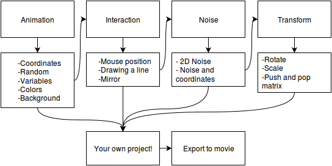
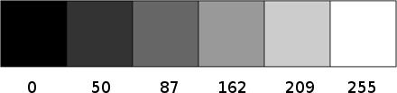
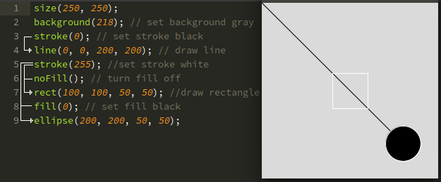
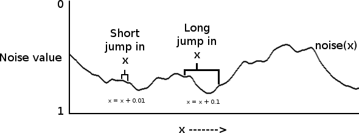

Mehackit
Media Art Workshop with Procesing
Press down arrow to continue
Welcome
This website contains short examples and exercises to help you getting started with programming. The aim is to explore what kind of visual things you can make with code. We'll be working with a language and environment called Processing, which is widely used by students, artists, designers, researchers, and hobbyists. It's a good choice for for learning how to code within the context of the visual arts.
First, download and install Processing. After that, press right arrow to move to the next slide. Next slide explains how to use this site.
Press right arrow to move to next slide
Introduction
The material is divided into five sections. Each section exhibits a small project and introduces new concepts along the way. After completing a section you can start creating your own project or move to the next section. Each section gives you more inspiration and tools to work with.
The goal is that you create your own work of art and export it to a video. You can first follow the first section to get started and then decide wereither to move to the next section or start working on your own project.

Press down arrow to move to next section
Drawing Shapes
Press right arrow to continue
Statements
A program is made of statements. A statement ends in a semi-colon (;). The statement below calls an ellipse-function, wich draws an ellipse:
ellipse(20, 50, 10, 40);
Some functions need parameters. Ellipse-function needs four parameters. First and second parameters set the x and y coordinates, third and fourth parameters set the width and height of the ellipse. Parameters are separated by comma (,).
parameters
|
function name |
| |
| |
| /------+-----\
ellipse(20, 50, 10, 40);
| | | |
x y width |
|
height
Try the example in the editor below. Can you draw a circle with the ellipse-function?
Order
First run the example below.
Then change the order of the statements to look like following (use ctrl+x & ctrl+v). What happens and why?
ellipse(40, 45, 50, 50);
ellipse(50, 50, 20, 20);
Size
The canvas is quite small. Use the following statement in the beginning of your sketch to make your canvas bigger:
size(500,500);
The statement calls size-function, which sets the size for the canvas. Size-function needs two parameters. The first one is the width of the canvas and the second one is the height.
Coordinates
As you may have noticed, Processing canvas works with coordinates. The upper left corner is (0,0). X gets bigger when you go right and y gets biggerwhen you go down. The sketch below illustrates this.
Grayscale Colors

In the digital world, color is defined as a range of numbers. Let's start with the simplest case: black & white or grayscale. 0 means black, 255 means white. In between, every other number (50, 87, 162, 209, and so on) is a shade of gray ranging from black to white.
Calling a fill-function chances the fill color for all what's drawn after the fill-function call. Stroke-function does the same for outline color.
fill(0); Fill with one parameter sets a grayscale color. This one is black.
fill(255, 10); Fill with two parameters sets a grayscale color with transparency. This one is quite transparent white.
Try out fill and stroke to color the sketch below.
Order and colors
When you draw many shapes and define many colors, Processing will always use the most recently specified stroke and fill. Calling stroke or fill overrides the previous values and the following shapes are drawn with the new colors, until new colors are set:

RGB Colors

You can mix red, green, and blue to create colors. As it was with grayscale, each component gets a value between 0 and 255.
fill(255, 255, 0); Fill with three parameters sets a red-green-blue color. This one is yellow.
fill(0, 255, 255, 200); Fill with four parameters sets a RGB-color with transparency. This one is a little bit tansparent cyan.
background(255,0,0); Covers the whole canvas with the specified color. This one is red.
You can turn off fill and stroke with noStroke(); and noFill();. strokeWeight(1); sets the thikness of outlines.
Putting it all together
So far we have covered:
Canvas: size and background
Drawing shapes: rect, ellipse, triangle, line and point
Colors: RGB, grayscale and transparency, fill, stroke, noFill, noStroke and strokeWeight
Next you can fire up Processing and create your own arrangement using the previous examples. Or you can press down arrow to move to the next section and discover more ways to use Processing.
Animation
Structure
So far our sketches have been only a bunch of commands that the computer executes form top to bottom and then stops. That's not all we can do. We can group statements to functions (yes, you have been calling functions that are actually a group of statements) and have more control over the execution.
Processing has two special functions, setup and draw. Setup gets called once when the program begins and draw gets called again and again, as long as the program runs.
Random
In the last example, everything was a bit static. The draw-function got called over and over again (30-60 times per second), but it only draw the same rectangle each time. Let's create some mevement by changing where the rectange is drawn each frame.
random(min, max); returns a random decimal number between min and max. You could use random function to generate x and y coordinates for a shape. Try the example below and create different shapes with random position and size.
Function call as a parameter

In case you didn't notice, in the last example we gave function calls as parameters for the ellipse-function:
ellipse(random(0, 512), random(0, 512), 50, 50);
This is often quite handy. When the ellipse-function is called, it first executes the functions in its parameters (functions random(0, 512) and random(0, 512)). After those functions return their values, ellipse function get executed with the new parameters.
Variables
Quite often you'll want to store something. You can store different things with a thing called variable. A variable is like a box where you can put things and take things out when you need them.
In Processing you'll have to state what kind of things you want to store in the box. For a computer a whole number (1, 2, 4902, ...) is a different thing than a decimal number (1.0, 3.14, ...). So when you create a variable, you'll have to state if the variable is a whole number, decimal number, a string or maybe something other (boolean, color, int, float, String are quite common, but for now just use float).
It also matter where you create your variable. If you create your variable inside the draw function, it will only be visible in the draw function. If you create the variable before setup funciton, it will be visible to the whole sketch.
Using variables
When you create a variable you have to state he variables type. After that you can change the variables value by assigning a new value to the variable.
If you create a variable in the beginning of the sketch, it will be visible for the whole sketch. If you create a variable inside a function (like setup or draw) it will only be visible in the corresponding function.
Example with transparent colors and random
Below is a simple example with line and random functions. Adding a bit transparency to the fill color creates a nice glowing effect.
Fade background
You can do a lot of cool thing with transparent colors. For example, you get a nice fade effect if you use a transparent color instead of a solid background color.
Background function doesent allow a transparent color as a parameter, but you can draw a canvas-sized rectangle instead. Check the example below and use it in your animation if you wish.
Next
In this section we covered:
setup, draw, functions as parameters, random, and variables
Next you could open processing and start creating animations using the previous examples. If you feel like you need more to work with, check out the following sections.
Interaction
Mouse
Let's make something interactive. Processing has some nice functions for working with the users mouse. You can get the coordinates with mouseX and mouseY variables, which are updated each frame.
The example below draws a point to the current mouse coordinate. You can edit the code to draw for example a rectangle, circle or a line to the curren mouse position.
Drawing a line
Point function makes the drawing a bit, well, pointy. We can make a smoother result usling line. Line function draws a line bitween two points. We get the curren mouse position with mouseX and mouseY. Processing also has variables for the previous positions called pmouseX and pmouseY.
In the draw function I have used a mousePressed-variable and an if-statement. If-statement checks if the given condition is true and, if it is, executes the statements. Just like mouseX is a variable, Processing has a mousePressed-variable wich is true, if the mouse is pressed and otherwise false.
Mirroring
You could make different algorithms for warious effects for drawing. Mirroring is a straight-forward and visually nice looking algorithm. In the example below, the canvas is mirrored vertically in the middle.
Can you modify the example to use line-function onstead of point? You'll need to use pmouseX and pmouseY variables and do the same mirror calculations to those values too.
Mirroring part. 2
This example draws a point to four mirrored positions. You could try to use line instead of point or draw some other shapes like ellipses or rectangles to the mirrored positions. You could also modify the sketch to draw only when mouse is pressed.
Next
In this section we covered:
mouseX, mouseY, pMouseX, pMouseY, mouseClicked, if and mirroring.
Next you could open processing and start creating interactive sketches using the previous examples. If you feel like you need more to work with, check out the following sections.
Noise
Noise is a bit random but not too much
Noise offers random values that are 'smoother' than totally random values.
How to use noise
noise() always returns a value between 0-1 depending on the coordinate that is given as a parameter. noise(0) returns a value and if you call noise(0) again, you get the same value again. If you call noise(0.01) you get a new value. The graph below shows a noise(x) curve, i.e. the value of noise on y-axis at the corresponding x-value.

Depending on how much you increment x each frame the values will be smoother or more random.
Noise-function visualized
Coordinates with noise
Below is a full example where a rectangle's coordinates and size are generated with the noise-function. Try to modify the increment values and see how the sketch behaves differently. Following this example, you could also modify the previous section's interactive sketch to generate coordinates with noise instead of mouseX and mouseY.
Drawing noise curve with while-loop
Now it's the time to learn about control structures. While loop is a powerful tool found in most ot the programming languages. If you wish, watch this video from Daniel Shiffman as an introduction.
While-loop is repeated as long as the given condition is true. In the example below, the condition is x < width (x is smaller than 500). When x is 500, the condition will be false and the program will move forward and execute draw-funcion again.
Animating noise curve with while-loop
If we edit the previous example a little bit, we can animate the noise curve. So far we have been giving noise-function only one parameter. We can also give noise-function two parameters, x- and y-coordinate. If we add a y-coordinate to the noise-function and increment the y-coordinate at the end of the draw-function we get slightly different curve on each frame:
Animating noise curve with for-loop
Additionally to while-loop, there is also a for loop in Processing and many other languages. For-loop doesen't introduce any new functionality. Everything you do with a for-loop, you could also do with the while-loop. For-loop is just a more convinient way to express things. Here's a good video about for-loops by Daniel Shiffman.
Nested for-loops
In the last example we animated a single noise curve. Why not use another for-loop and animate 20 curves!
The example has two nested for loops. The inner one draws a curve. The outer one repeats the inner loop with different values. Loops (especially nested loops) can be tricky to comprehend even for experienced programmers. Take your time and try to understand step-by-step what the code does.
Next
Phew! That was an intense section. We covered at least:
noise(x), noise(x, y), noise(x, y, z), map, while and for.
Open processing and start creating or check the next section. Following the previous examples you could for example modify the mirror drawing sketch to use noise instead of mouse, create colors with noise or map mouse coordinates to create a color for your previous sketches.
Transform
Other resources
Fun programming
Funprogramming.org has inspiring short tutorials and videos about processing. The examples can be very helpful for inspiration. For example this whole website is ispired by funprogramming :)
Processing.org
Processing reference is the first place to go in doubt. Processing.org has also good tutorials, such as objects by Daniel Shiffman.
OpenProcessing.org
OpenProcessing is an online platform for sharing and discussing Processing sketches. Here and here you can find sketches created at mehackit courses.
Export to movie
Add the following line of code to the end of the draw-function. This statement saves the current frame as and image.
saveFrame("frames/####.tif");
After that, open Processing and select Tools > Movie Maker. Select the frames folder, set compression as PNG and select "Same size as originals".


If you want to share your work, create a 5-10 second video and send it to the given email at we transfer.